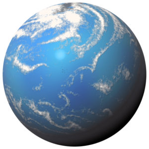
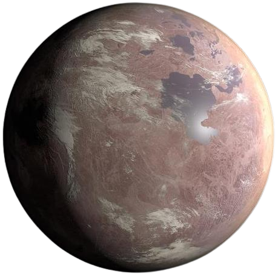
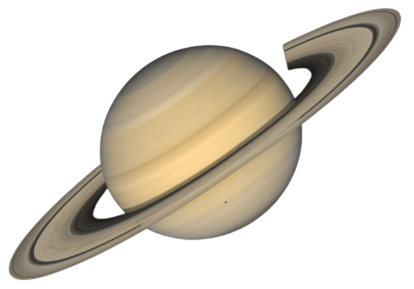

Planeta Fervente
Esta superterra tem 6 vezes a massa da Terra
e 2,6 vezes o seu raio. Foi descoberto por David
Charbonneau, em 16 de dezembro de 2009.
Acredita-se que o planeta seja formado por 3/4
de água gelada e o restante por rochas. A sua
densidade é considerada baixa e a temperatura
de sua superfície é de cerca de 200 °C.
Terra Clone

Trata-se do primeiro planeta de tamanho semelhante
ao da Terra, descoberto na zona habitável de uma estrela.
É o planeta mais externo descoberto pela sonda Kepler
da NASA, lançada no ano de 2009, que orbita uma estrela-anã
vermelha a 500 anos-luz da Terra na constelação de Cisne,
chamada Kepler-186.
Lua Solar

É um objeto transnetuniano com uma crosta relativamente lisa, não marcada por crateras de impacto. Ela está localizado a quase 6,5 bilhões de quilômetros do Sol, no cinturão de Kuiper, uma região do Sistema Solar.
Terra 2.0
Terra 2.0 é um exoplaneta que orbita a estrela anã vermelha Kepler-1649. Está localizado a 300 anos-luz
da Terra. Em 2020, Jeff Coughlin, diretor do Escritório
de Ciências K2 do SETI, descreveu-o como o "planeta
mais parecido à Terra" alguma vez encontrado pelo
Telescópio Espacial Kepler.
Planeta Vidro

Planeta vidro é um planeta extrassolar gigante, parecido
com Júpiter. Está situado a cerca de 63 anos-luz da Terra.
O planeta foi descoberto orbitando a estrela HD 189733 A
em 5 de outubro de 2005, quando os astrônomos na França
observaram o planeta em trânsito em toda a face da estrela.
Porém só recentemente foi descoberta a existência de vapor
de água em sua atmosfera.
Super-Saturno
Super-Saturno é uma estrela semelhante ao Sol na constelação de Centaurus a uma distância de cerca de 434 anos-luz da Terra. Uma estrela relativamente jovem, sua idade é estimada em 16 milhões de anos e sua massa é cerca de 90% da massa do Sol. A estrela tem uma magnitude aparente de 12,3 e requer um telescópio para ser vista.
Planeta Sol

Planeta Sol é um exoplaneta que orbita uma estrela Classe-G Kepler-22.
Está localizado cerca de 620 anos-luz da Terra na constelação de Cisne.
Foi descoberto pela sonda espacial Kepler, da NASA em 2011 e foi o primeiro
planeta em trânsito conhecido a orbitar dentro da zona habitável de uma
estrela semelhante ao nosso Sol.